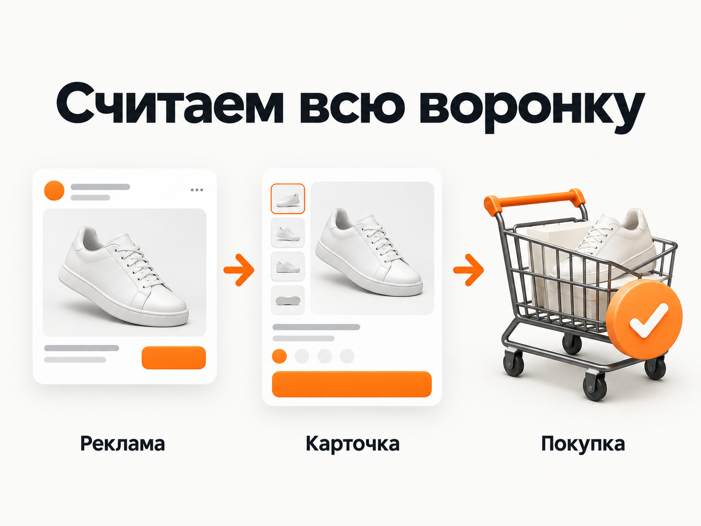
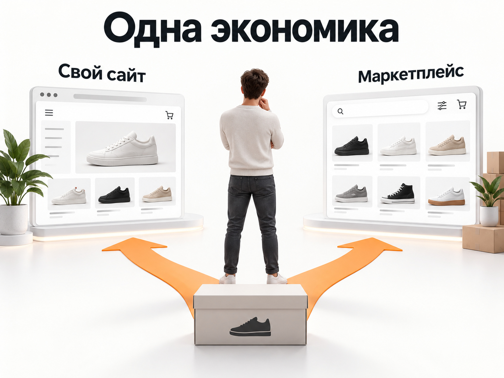

Блог о платном трафике
Продвижение бренда обуви в 2026 году: инструкция и прогноз
Продвижение бренда обуви я бы строил сразу вокруг двух задач: получать продажи здесь и сейчас и постепенно формировать собственный спрос на бренд.
Для первой задачи подходят Яндекс Директ, товарная реклама, SEO по коммерческим запросам и маркетплейсы. Для второй нужны визуальный контент, соцсети, блогеры, PR, CRM и повторные контакты с покупателями.
Главная ошибка - оценивать результат по кликам, трафику или даже количеству оформленных заказов. В обуви нужно считать всю экономику до фактически выкупленной продажи: рекламные расходы, средний чек, отмены, возвраты, логистику, маржу и повторные покупки.
Что отличает продвижение обувного бренда
Обувь - визуальный и одновременно функциональный товар. Покупатель оценивает дизайн, но затем проверяет размер, материал, удобство, сезонность, условия доставки и возврата.
Поэтому рекламой нельзя компенсировать слабую карточку товара или неудобный интернет-магазин.
В актуальном материале Яндекс Рекламы по обувной тематике отдельно отмечаются удобные фильтры, актуальная информация о наличии, мобильная версия, качественные фотографии и подробные карточки товаров. Для продвижения предлагается сочетать Поиск, РСЯ, товарную галерею, SEO, социальные сети и другие точки контакта.
Для обуви также характерна сильная сезонность. Зимние ботинки, демисезонная обувь, кроссовки, сандалии и детский ассортимент живут в разных циклах спроса. Поэтому рекламный план лучше строить не на год одной цифрой, а отдельно по категориям и сезонам.
Какие результаты встречаются в свежих кейсах
Универсальной средней стоимости заказа для обувного бренда нет. Слишком сильно различаются чек, известность бренда, ассортимент, скидки, география, сайт и доля повторных покупателей. Но свежие кейсы позволяют понять диапазон ситуаций.
В кейсе fashion-бренда Befree, опубликованном в феврале 2026 года, ML-сегментация ретаргетинга позволила снизить CPO на 7%, увеличить конверсию в заказ на 0,44 процентного пункта и снизить ДРР ретаргетинга на 3 процентных пункта. При отдельном тесте холодной look-alike аудитории ДРР составил 33,77%, что было на 10,04 процентного пункта хуже существующей оптимизированной РСЯ. То есть у уже отлаженной кампании в тот же период ДРР был около 23,73%. Это расчёт по опубликованным данным, а не рыночный норматив.
Другой российский fashion-бренд в январе 2026 года получил ДРР 7,3% против 17,4% годом ранее. Расходы сократились на 12%, количество продаж выросло на 80%, выручка с Директа увеличилась примерно вдвое. Но у проекта уже был сильный бренд, органический брендовый спрос, активные соцсети, email-база и распродажа со скидками до 60%. Использовать 7,3% как норму для нового обувного бренда было бы неправильно.
Свежий обувной кейс Tumar показывает другой сценарий. Бренд постепенно выходил на Wildberries и Ozon, тестировал ассортимент и рекламу до высокого сезона. В августе было получено 27 заказов на сумму более 350 000 ₽, а в сентябре уже 152 заказа более чем на 1,66 млн ₽. Авторы не публикуют точную ДРР, поэтому использовать этот кейс для расчёта стоимости привлечения нельзя. Но он хорошо показывает роль сезонности и постепенного масштабирования.
Есть и показательный антикейс интернет-магазина обуви. После активного выхода бренда на Wildberries покупатели продолжали приходить с performance-рекламы на собственный сайт, но затем сравнивали условия и покупали тот же товар на маркетплейсе, где цена была ниже, а доставка бесплатной. В итоге реклама сайта фактически помогала продажам на другой площадке.
Из этих данных я бы делал один вывод: прогноз обувного бренда нужно строить от собственной экономики, а не искать в интернете одну «нормальную цену заказа».
Прогноз ДРР для бренда обуви
Для первоначального медиаплана нового или пока слабо известного обувного бренда я бы закладывал рабочий диапазон ДРР около 25-35% на этапе тестирования.
Это не средняя по рынку. Это осторожный диапазон для расчёта, который позволяет не строить прогноз на результатах уже известных брендов.
После накопления статистики становится понятно, реально ли удерживать 15-25%, либо конкретная экономика проекта позволяет работать и при большей ДРР. Сильный бренд с большой собственной аудиторией, повторными продажами и хорошей конверсией сайта может получать заметно меньшую ДРР. Новый бренд на холодной аудитории обычно находится в другой ситуации.
Как рассчитать допустимую стоимость заказа
Базовая формула:
Допустимый CPO = средний чек × допустимая ДРР
Если средний фактический чек после возвратов составляет 10 000 ₽, а максимально допустимая ДРР - 30%:
10 000 × 30% = 3 000 ₽.
Значит, один выкупленный заказ должен обходиться рекламодателю примерно не дороже 3 000 ₽. Для разных чеков расчёт выглядит так:
| Средний чек | ДРР 25% | ДРР 30% | ДРР 35% |
|---|---|---|---|
| 6 000 ₽ | 1 500 ₽ | 1 800 ₽ | 2 100 ₽ |
| 8 000 ₽ | 2 000 ₽ | 2 400 ₽ | 2 800 ₽ |
| 10 000 ₽ | 2 500 ₽ | 3 000 ₽ | 3 500 ₽ |
| 12 000 ₽ | 3 000 ₽ | 3 600 ₽ | 4 200 ₽ |
| 15 000 ₽ | 3 750 ₽ | 4 500 ₽ | 5 250 ₽ |
Это математический расчёт, а не прогноз реальной стоимости заказа в Директе. Для обуви я бы обязательно добавил сюда процент выкупа. Если часть оформленных заказов отменяется или возвращается из-за размера, таблица по оформленным заказам будет выглядеть лучше реальной экономики.
Можно использовать формулу: допустимый CPO оформления = средний чек выкупа × доля выкупа × допустимая ДРР. И уже после этого сравнивать рекламную стоимость оформленного заказа с допустимой.
CPA в Яндекс Директе: что это и как считать стоимость конверсии
Какой рекламный бюджет нужен
Размер бюджета логичнее считать назад от допустимого CPO.
Яндекс рекомендует, чтобы конверсионная стратегия получала минимум 10 конверсий в неделю. В отдельном чек-листе эффективности рекомендация составляет 10-20 конверсий в неделю.
Если допустимый CPO составляет 3 000 ₽:
- 10 заказов в неделю требуют примерно 30 000 ₽;
- 20 заказов - около 60 000 ₽;
- месячный бюджет получается примерно 130 000-260 000 ₽.
| Плановый CPO | Бюджет на 10 заказов в неделю | Бюджет на 20 заказов в неделю | Примерно в месяц |
|---|---|---|---|
| 2 000 ₽ | 20 000 ₽ | 40 000 ₽ | 87 000-173 000 ₽ |
| 3 000 ₽ | 30 000 ₽ | 60 000 ₽ | 130 000-260 000 ₽ |
| 4 000 ₽ | 40 000 ₽ | 80 000 ₽ | 173 000-346 000 ₽ |
Это уже полезнее абстрактного вопроса «сколько нужно на Директ». Если бизнес способен платить за заказ максимум 2 000 ₽, а бюджет составляет 30 000 ₽ в месяц, создавать пять отдельных кампаний с оптимизацией на покупку я бы не стал. Каждая получит слишком мало данных.
Прогноз бюджета Яндекс Директ: как рассчитать расходы, клики и заявки

С чего начинать продвижение бренда обуви
Я бы начинал не с рекламного кабинета, а с экономики ассортимента.
Для каждой основной категории нужны:
- средний чек;
- маржа;
- процент выкупа;
- возвраты;
- стоимость доставки и обработки;
- повторные покупки;
- максимально допустимая стоимость привлечения нового покупателя.
У кроссовок за 6 000 ₽ и кожаных ботинок за 18 000 ₽ может быть совершенно разный допустимый CPO. Объединять их в одну экономику неудобно.
Если ассортимент большой, полезно дополнительно разделить товары по марже и наличию. Нет смысла активно покупать трафик на размерный ряд, в котором остались две непопулярные позиции.
Каким должен быть сайт обувного бренда
Перед рекламой я бы проверил минимум следующие элементы:
- удобный каталог;
- фильтры по размеру, полу, сезону, цвету, материалу и другим важным характеристикам;
- актуальные остатки;
- таблицу размеров;
- несколько качественных фотографий товара;
- фотографии обуви на человеке;
- понятные условия доставки;
- условия обмена и возврата;
- отзывы;
- заметную цену;
- мобильную версию;
- простой процесс оформления заказа.
Яндекс отдельно рекомендует использовать для товарного продвижения фид. Из него Директ может автоматически формировать объявления, а фильтры позволяют выбирать нужные товары. Для большого и часто обновляемого ассортимента рекомендуется YML-фид.
Фид особенно полезен для обуви: размеры и модели заканчиваются, появляются новые коллекции, меняются цены. Обновлять сотни объявлений вручную нет смысла.
Как запускать Яндекс Директ для бренда обуви
Товарная реклама
Для интернет-магазина это одно из первых направлений, которые я бы тестировал.
Товарная кампания может автоматически создавать объявления для отдельных товаров, категорий и магазина и показывать их в Поиске и РСЯ. Товарные объявления также могут попадать в товарную галерею Яндекса.
Для обуви формат логичный: пользователь сразу видит модель, фотографию и цену. Я бы разделял ассортимент хотя бы по крупным экономическим группам: например, категории, марже, сезону или ценовому сегменту. Делить каждую модель на отдельную кампанию без необходимости тоже не нужно.
Поиск
На Поиске есть сформированный спрос:
- купить женские кроссовки;
- мужские кожаные ботинки;
- зимние сапоги;
- белые кеды;
- обувь определённого материала;
- конкретные модели и бренды.
Человек уже знает, что примерно ему нужно. Помимо товарных форматов можно тестировать категорийную рекламу и комбинаторные объявления. С лета 2026 года новые текстово-графические объявления в ЕПК уже не создаются, для соответствующих задач Яндекс перевёл работу на комбинаторный формат.
Как настроить рекламу в Яндекс Директ в 2026 году
РСЯ
РСЯ для обувного бренда я бы рассматривал в двух ролях. Первая - привлечение новой аудитории. Здесь критичен визуал. Обычная фотография пары обуви на белом фоне часто проигрывает изображению товара в реальном образе или короткому видео, где видно, как модель выглядит на человеке.
Вторая - повторная работа с уже знакомой аудиторией. Можно выделять пользователей, которые смотрели конкретную модель, открывали несколько товаров одной категории, добавили товар в корзину, начали оформление или раньше покупали у бренда. Но не нужно автоматически создавать десяток ретаргетинговых кампаний. Сначала аудитория должна накопиться, а отдельный сегмент должен решать конкретную задачу.
Ретаргетинг в Яндекс Директ: как настроить и когда он действительно нужен

Брендовый трафик нужно считать отдельно
Если марку уже ищут по названию, брендовая реклама обычно показывает очень хорошие показатели. Но это не означает, что такая кампания действительно привела нового покупателя. Человек уже знал бренд и специально его искал.
Поэтому я бы отдельно смотрел:
- брендовые продажи;
- продажи по категорийным запросам;
- товарную рекламу;
- РСЯ;
- ретаргетинг;
- новых и вернувшихся покупателей.
Иначе дешёвый брендовый трафик может улучшить среднюю ДРР всего рекламного кабинета и скрыть слабую эффективность привлечения новой аудитории.
Аналитика для интернет-магазина обуви
Для нормального управления рекламой одной цели «покупка» мало.
В Яндекс Метрике для интернет-магазина стоит подключить электронную коммерцию. Она позволяет передавать просмотры товаров, добавления в корзину, покупки, состав заказа и доход. В отчётах можно анализировать товары, категории, источники заказов и полученную выручку.
Минимальная воронка:
просмотр товара -> корзина -> оформление -> заказ -> выкуп
Последний этап часто находится уже в CRM или учётной системе. Если оптимизировать рекламу только на корзину, алгоритм может научиться приводить людей, которые охотно складывают обувь в корзину и ничего не покупают.
Если передавать доход от электронной коммерции, Директ умеет использовать его при оптимизации кампаний в том числе по ДРР.
Как создать сегмент в Яндекс Метрике: настройка и ретаргетинг
Как выбирать стратегию
Если покупок пока мало, я бы не начинал с жёсткого ограничения стоимости заказа, взятого из головы.
Сам Яндекс рекомендует для проекта без накопленной статистики сначала использовать «Максимум конверсий» с недельным бюджетом и собрать данные. После двух-трёх недель при достаточном количестве событий уже можно оценивать найденную системой стоимость конверсии и использовать её как ориентир.
Для интернет-магазина с нормальным объёмом заказов и передаваемой выручкой интереснее становится оптимизация по ДРР. Это особенно удобно при большом ассортименте, где один заказ может стоить 5 000 ₽, а другой 20 000 ₽. Оптимизировать оба по одинаковому CPO не всегда логично.
Какую стратегию выбрать в Яндекс Директ: конверсии, клики или ручные ставки
Продвижение через маркетплейсы
Для обувного бренда Wildberries, Ozon и Яндекс Маркет могут быть полноценными каналами привлечения новых покупателей.
Свежий кейс Tumar показывает, что маркетплейс можно использовать как отдельную точку роста, постепенно тестируя ассортимент, карточки и рекламу перед масштабированием.
Но собственный интернет-магазин и маркетплейсы должны рассматриваться как одна система.
Если одна и та же пара стоит:
- на сайте 10 000 ₽ плюс доставка;
- на маркетплейсе 8 500 ₽ с бесплатной доставкой,
часть рекламного трафика сайта закономерно уйдёт покупать на маркетплейс.
Не обязательно делать цены полностью одинаковыми. Но у покупки напрямую должна быть понятная причина: ассортимент, бонусная программа, сервис, эксклюзивные модели, ранний доступ к коллекциям или другие реальные преимущества бренда.

SEO для бренда обуви
Яндекс Директ позволяет покупать существующий спрос сразу. SEO требует больше времени, но со временем снижает зависимость от платного трафика.
Для интернет-магазина обуви я бы развивал:
- основные категории;
- подкатегории;
- страницы бренда;
- сезонные разделы;
- полезные страницы фильтрации;
- карточки товаров;
- статьи под информационный спрос.
Например:
- как выбрать размер обуви;
- как ухаживать за замшей;
- с чем носить конкретный тип обуви;
- как выбрать обувь для дождя;
- чем отличаются материалы;
- как выбрать зимнюю обувь.
Контент должен вести дальше к ассортименту, а не существовать отдельно от магазина.
Социальные сети, контент и блогеры
Для бренда обуви эта часть маркетинга важнее, чем для многих услуг. На Поиске человек уже знает, что хочет купить. В социальных сетях можно сформировать желание до появления конкретного запроса.
Лучше всего для этого подходят визуальные форматы:
- обувь в готовом образе;
- короткие видео в движении;
- сравнение цветов;
- детали материала;
- производство;
- распаковка;
- реальные покупатели;
- стилизации;
- новые коллекции.
У блогеров я бы оценивал не размер аудитории сам по себе, а соответствие аудитории бренду и реальные переходы, промокоды, продажи или другие измеримые действия.
CRM и повторные продажи
Бренд становится сильнее, когда следующую пару человек покупает уже без повторной дорогой покупки холодного рекламного контакта.
Поэтому после первой продажи нужны:
- email;
- мессенджеры;
- программа лояльности;
- персональные подборки;
- уведомления о новой коллекции;
- возврат покупателей к следующему сезону.
При нормальной аналитике нового покупателя и повторного клиента лучше считать отдельно. В противном случае рекламная система может показывать отличную окупаемость за счёт людей, которые и так давно знают бренд.
Когда масштабировать рекламу
Я бы увеличивал бюджет только после того, как одновременно выполняются несколько условий:
- CPO и ДРР укладываются в экономику.
- Есть достаточное количество заказов для обучения алгоритмов.
- Результат держится не несколько дней.
- Популярные размеры и модели есть в наличии.
- Сайт выдерживает дополнительный трафик.
- Логистика справляется с ростом заказов.
- Возвраты и выкупы не ухудшают реальную экономику.
Масштабирование слабой связки обычно приводит просто к более быстрому расходованию денег.
Основные ошибки при продвижении обувного бренда
Первая - считать оформленный заказ конечной продажей. В обуви возвраты и неподошедшие размеры могут серьёзно менять результат.
Вторая - смотреть только на общий ДРР. Брендовая реклама, новые покупатели и ретаргетинг должны анализироваться отдельно.
Третья - вести рекламу на товары без популярных размеров.
Четвёртая - продавать на собственном сайте заметно хуже, чем на маркетплейсе, а затем пытаться компенсировать это рекламой.
Пятая - дробить небольшой объём заказов между большим количеством кампаний.
Шестая - масштабировать рекламу раньше, чем подтверждена экономика.
Седьмая - показывать обувь только как карточку товара и почти не использовать визуальный контент, который формирует сам бренд.
Пошаговый план продвижения бренда обуви
- Рассчитать маржинальность, средний чек, выкуп и допустимую ДРР.
- Разделить ассортимент по категориям, сезонности и экономике.
- Проверить сайт, карточки товаров, доставку и возвраты.
- Настроить электронную коммерцию в Метрике.
- Подготовить актуальный товарный фид.
- Запустить товарную рекламу и горячий поисковый спрос.
- Протестировать РСЯ с несколькими визуальными концепциями.
- После накопления трафика проверить отдельные сценарии ретаргетинга.
- Параллельно развивать SEO и контент.
- Синхронизировать цены и предложения сайта с маркетплейсами.
- Считать отдельно новых и повторных покупателей.
- Масштабировать только те категории и кампании, которые подтверждают прибыльность.
Итоговый прогноз
Для нового обувного бренда без собственной статистики я бы не обещал конкретный CPO.
Для первого медиаплана разумнее взять допустимую ДРР около 25-35%, рассчитать из неё максимально возможную стоимость заказа и проверить эту модель реальной рекламой.
Например, при среднем фактическом чеке 10 000 ₽ и плановой ДРР 30% ориентир CPO составит 3 000 ₽. Чтобы одна конверсионная кампания получала рекомендуемые Яндексом 10-20 покупок в неделю, потребуется примерно 130 000-260 000 ₽ рекламного бюджета в месяц.
Это не обещание получить заказ за 3 000 ₽. Это граница, при которой реклама подходит экономике бизнеса.
После нескольких недель работы вместо прогноза появятся реальные показатели: CPO, ДРР, конверсия, процент выкупа, эффективность отдельных категорий и стоимость нового покупателя. Именно на них уже нужно строить дальнейшее масштабирование.
Мастер отчетов Яндекс Директ: как смотреть статистику в 2026 году